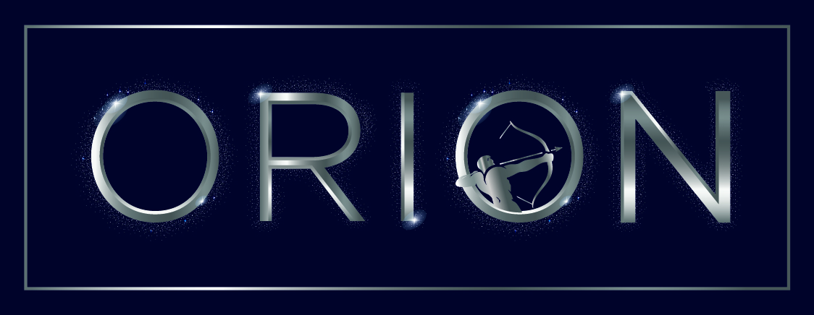

ORION conecta los activos, sistemas y fuentes de datos que ya tienes para entregarte visibilidad en tiempo real, alertas inteligentes y mejores decisiones, sin quedar amarrado a un hardware o proveedor único.
Tus datos vienen de sensores, equipos, PLC, SCADA, ERP, APIs y planillas de distintas marcas. ORION los une en una sola plataforma.
Integra los dispositivos y fuentes que ya tienes, sin quedar cautivo de una marca o tecnología.
Industria, energía, agua, minería, logística, agricultura, retail, edificios e infraestructura.
No solo visualiza: ayuda a detectar, priorizar, automatizar y ejecutar acciones.
Parte con un caso de uso y suma activos, sitios, sensores, usuarios e integraciones.
APIs y conectores para integrarse con tus plataformas empresariales.
Partimos por el problema operacional, no por el dispositivo.
La plataforma es abierta para adaptarse a nuevos activos y procesos. Cuéntanos tu desafío.
ConversemosDe cualquier fuente de datos a decisiones operacionales. Trabajamos primero con lo que ya tienes y sumamos hardware solo cuando falta el dato.
Nuestra IA analiza los datos de tu operación, les agrega contexto y genera recomendaciones accionables.
ORION no vende un sensor: convierte datos de activos en decisiones operacionales.
Empieza con lo que necesitas y suma capacidades a medida que crece tu operación.
Integración de dispositivos, sistemas, APIs y fuentes de datos, con normalización y visualización básica.
Dashboards, mapas, alertas, reportes, roles, reglas y seguimiento de activos.
Modelos predictivos, detección de anomalías, variables virtuales, recomendaciones y priorización de riesgos.
Flujos de trabajo, tickets, notificaciones y órdenes de trabajo ejecutados en tus sistemas (ERP, CMMS, SCADA).
Multiempresa, white-label, APIs, seguridad avanzada, SSO, SLA, ambiente privado y soporte especializado.
Sensores, gateways o conectividad solo cuando tu operación no cuenta con los datos necesarios.
Solo si se necesitaValidamos el valor en tu operación con indicadores definidos desde el inicio, antes de escalar a más activos, sitios o módulos.
Telemetría, viajes, seguridad y mantenimiento en una plataforma para concreteras, minería, transporte, distribución, maquinaria y electromovilidad.

Abiertos en la forma de conectar datos, específicos en el problema que resolvemos. No necesitas reemplazar tu infraestructura: ORION aprovecha los datos que ya existen y los convierte en una capa de inteligencia para tu operación.
Menos operación reactiva, más visibilidad, alertas accionables y control sobre tus activos críticos.
Cuéntanos qué activo o proceso quieres controlar mejor y te mostramos cómo ORION puede ayudarte, partiendo por los datos que ya tienes.